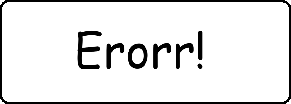
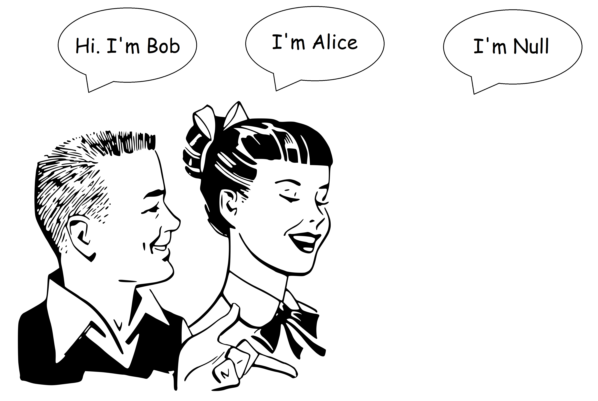
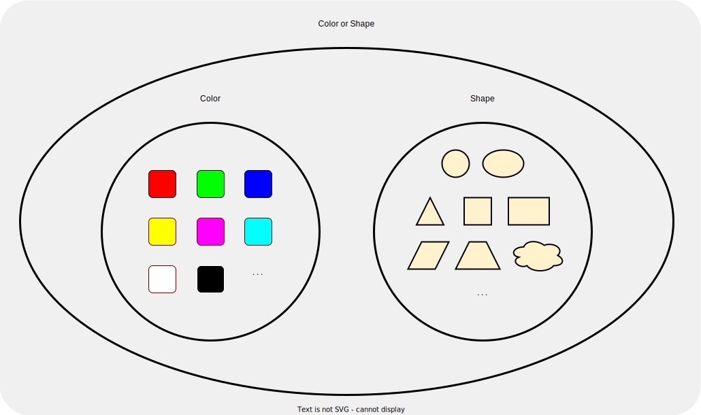
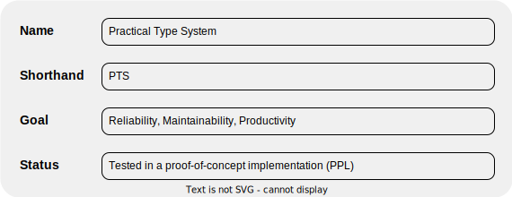
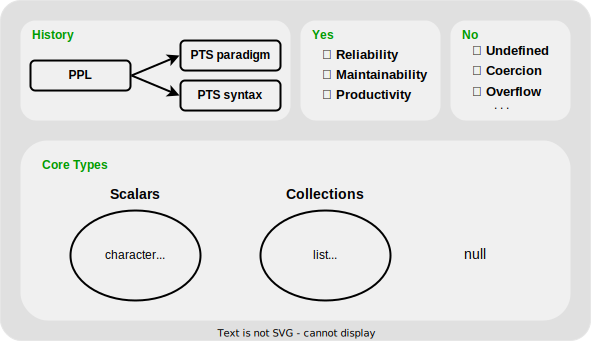
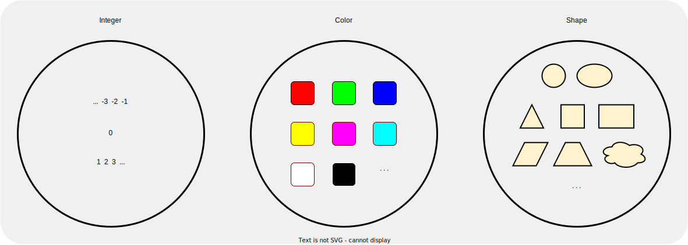
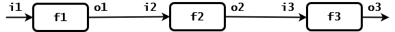
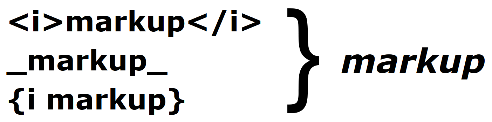
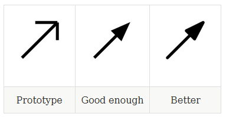

Christian Neumanns's Blog
Error Handling in the Practical Type System (PTS)
2024-02-29
This article explains how PTS facilitates error-handling and ensures that errors aren't silently ignored.
Null-Safety in the Practical Type System (PTS)
2023-12-11
The "absence of a value" is among the most important concepts a type system has to deal with. This article explains how "null" is supported in PTS, and how null-safety is ensured.
Union Types in the Practical Type System (PTS)
2023-11-28
Union types (aka sum types, variants, choice types) provide an elegant solution for frequent programming tasks. They provide a sound foundation for uniform null- and error-handling, they help to simplify APIs, increase type-safety, facilitate eager/lazy evaluation, and provide additional benefits.
Record Types in the Practical Type System (PTS)
2023-11-13
This article explains why we need native record types, and how they work in PTS.
Essence and Foundation of the Practical Type System (PTS)
2023-10-17
This article covers goals and non-goals of the Practical Type Sytem (PTS), the history of PTS, core types, and features that should not be supported in a practical type system designed to maximize reliablility, maintainability, and productivity.
Summary of the Practical Type System (PTS) Article Series
2023-10-17
This article provides a brief summary of the article series "How to Design a Practical Type System to Maximize Reliability, Maintainability, and Productivity in Software Development Projects".
How to Design a Practical Type System to Maximize Reliability, Maintainability, and Productivity in Software Development Projects
Part 1: What, Why, and How?
2023-10-03
This is the first article in a series about how to design a practical type system (PTS). This article explains benefits of a practical type system, and introduces the "PTS Design Rule" and "PTS Coding Rule".
Suggestion For a Better XML/HTML Syntax
2021-03-10
This article suggests a new XML/HTML syntax that is less verbose, easy to read and write, and works well for all kinds of XML documents, including HTML code.

Simple Introduction to Monads - With Java Examples
2020-04-02
A simple introduction to monads for developers with a background in non-pure-functional programming languages like C#, Java, Python, etc.
Null-Safety vs Maybe/Option - A Thorough Comparison
2019-09-17
An in-depth and practical comparison between Null-safety and the Maybe/Option type, both used to discard the infamous null pointer error.
We Need a New Document Markup Language - Here is Why
2019-03-11
A demonstration of inconveniences encountered with existing document markup languages. And a presentation of a new practical language designed to simplify the process of creating long or complex web documents.
Advantages of Document Markup Languages vs WYSIWYG Editors
2019-03-07
An explanation of why you might want to dump your word processor, and use a document markup language instead.

How to Design and Build the "Simplest Possible" Programming Language?
2018-04-29
Suppose we created the simplest possible programming language. How would it look like? Would it be practical and useful for real-life applications?
Fundamental Pragmatics for Successful Software Developers
2018-04-24
A list of battle-proven, practical, and useful tips for every software developer.
A Quick and Thorough Guide to 'null'
2017-05-09
What is the meaning of 'null'? How is null implemented? When should you use null in your source code? And when should you not use it?
Introduction to the 'Fail fast!' Principle in Software Development
2016-10-25
What is the 'Fail Fast!' principle? When and how should we use it? How does it help to debug less and create more reliable and safe code?